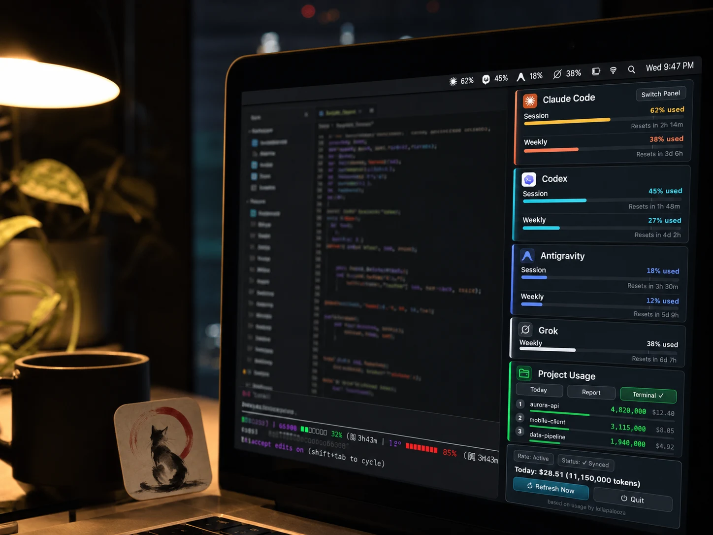
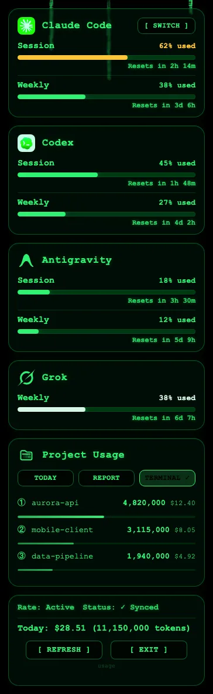
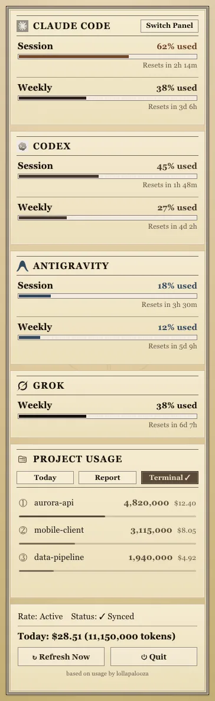
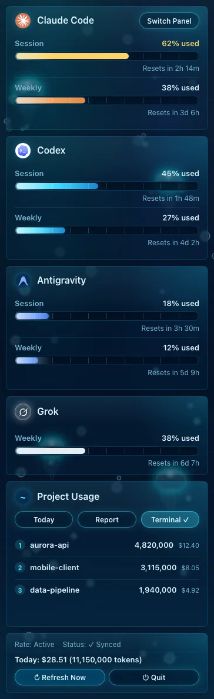
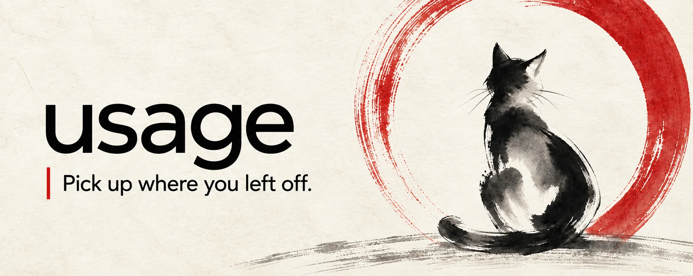

Claude Code、Codex、Antigravity、Grok の
クォータをメニューバーに。
AI クォータの残量をひと目で表示する、小さな macOS メニューバーアプリ（Windows ではシステムトレイに常駐）。バッテリー残量のように分かります。LLM API を呼び出さないため、クォータを確認してもトークンを消費しません。

トークンを燃やす開発者のために。
リファクタリング中にレート制限に達するかどうか、もう推測しなくていい。
5 時間 & 7 日のクォータをひと目で
Claude Code のセッション (5h) と週間 (7d) のパーセンテージをメニューバーに常時表示。クリックでプロジェクト別使用量とコストの詳細ポップオーバーを表示。
Claude Code、Codex、Antigravity、Grok を 1 つのアプリで
Anthropic、OpenAI、Google、xAI のクォータを並べて追跡。Codex は ~/.codex/sessions/ から設定不要で自動検出。Antigravity は CLI が保存済みのサインイン情報を利用します。

ワンクリック HTML レポート
今日・週・月・全期間で、トークン / コスト推移、トッププロジェクト、モデル分布を含む共有可能な HTML レポートを生成。プロジェクト名はデフォルトで非表示。

14 種のビジュアルパネル
マトリックスのデジタルレイン、Windows 95、レトロ新聞、深夜水族館、ワールドカップ FIFA HUD、蝶の設計図 — お好みの雰囲気で。



設計段階からローカルファースト
Claude Code と Codex の数値は、statusLine hook が書き込むステータスファイルと Codex セッション JSONL ログという、すでにディスク上にあるファイルから取得するため、ネットワーク通信は一切行いません。Antigravity のクォータは、CLI が保存した認証情報を使って Google から取得します。すべての外部リクエストは SECURITY.md に記載しています。
Grok CLI にも対応
4枚目のカードは Grok CLI 自身のローカルデバッグログから週間クレジット率を読み取ります — ネットワーク通信なし。トークン使用量は Claude Code や Codex と同様、当日のコストとプロジェクト合計にも反映されます。
簡潔モード
メニューバーのスイッチ一つで、Claude Code（導入済みなら Codex CLI にも）に会話全体をより簡潔で平易に答えるよう依頼——内容はそのまま、文字数だけ減り、コード・コマンド・エラーメッセージは一切省略されません。さりげないリマインダーが、長い会話でも冗長さへの逆戻りを防ぎます。
壁にぶつかる前に通知
コンテキストウィンドウが 70%（埋まるのが速い場合はもっと早く）に達すると、ステータスラインが /clear または /compact を促してトークン浪費を防ぎます。さらに、クォータ制限や回復のシステム通知も任意で有効化できます。ステータスラインには prompt cache ヒット率と有効期限へのカウントダウンも表示され、今すぐ終わらせてもキャッシュされた内容を使い回せるか判断できます。
CLI でも前回の続きから
ウェブ版もデスクトップアプリも、閉じて開き直せば会話履歴は自動でそのまま出てきます。CLI にも履歴は残っていますが、コマンドを知らないと呼び出せません。Resume はそこを自動化します——新しいセッションを開くだけで前回の続きを自動で引き継ぎ、コマンドを覚える必要も説明し直す必要もありません。さらに毎日ローカルのログをヘルスチェックし、トークンの無駄を見つけると引き継ぎに一行のお知らせを追加。「見せて」と言えば、AI が内容と改善策を説明します。ローカルの記録だけを読み、サーバーには接続しません。

気分に合うパネルを選んで。
14 種の内蔵テーマ。ポップオーバーのツールバーからいつでも切り替え可能。
10 秒でインストール。
4 つの方法、いずれも無料・AGPL-3.0。
Homebrew
コマンド 1 行。brew upgrade で常に最新。
brew install --cask aqua5230/usage/usageuvx（インストール不要）
ターミナルインターフェースのみ。メニューバーもトレイもありません。Linuxでも動作し、uvがPythonを用意します。
uvx usage-cli初回起動が macOS にブロックされた？「システム設定」→「プライバシーとセキュリティ」を開き、下へスクロールして「このまま開く」をクリック。macOS 14 以前では usage.app を右クリック →「開く」。